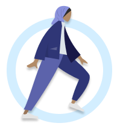
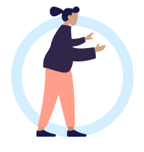

User Name
May 6, 2020
These are your matches
Request to connect with one of them and they will reach out to you soon.
-


Offline
Circler since April 8, 2020
Dr. Susan Brown
About Dr. Brown
Avid hiker and coffee fanatic. She empowers clients by meeting them where they are in a harm reduction model.
Licensed Grief Therapist
Huston, Texas
Years of Experience: 4
Languages: English, Spanish
-

Online
Circler since April 8, 2020
Dr. Eunice Sally
About Eunice Sally
Avid hiker and coffee fanatic. She empowers clients by meeting them where they are in a harm reduction model.
Licensed Grief Therapist
Oakland, CA
Years of Experience: 2
Languages: English